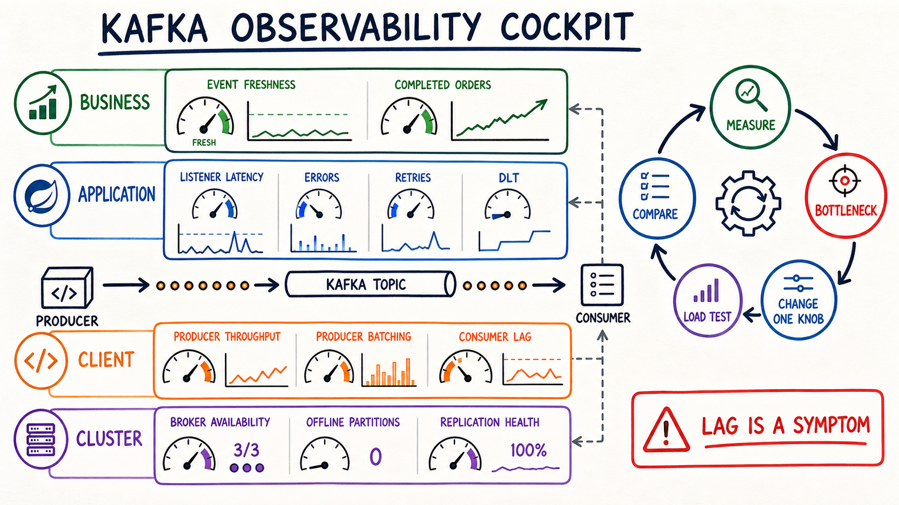

Triangulate
Nối business, app, client và cluster signals.
Consumer lag chỉ nói rằng một hàng đợi đang chậm lại. Bài này nối business freshness, Spring listener, Kafka client và broker metrics để tìm đúng bottleneck—rồi thay một knob, load test và so sánh.
Nối business, app, client và cluster signals.
Tính arrival rate, service rate, backlog và drain time.
Baseline → đổi một knob → load test → compare.
Alert theo SLO, có runbook và bằng chứng sau sự cố.

Oldest event age, order completed rate, SLA/SLO.
Listener latency, failures, retries, DLT, downstream calls.
Lag, poll, send rate, batching, request latency, errors.
Broker availability, offline/under-replicated partitions, request saturation.
Capacity xấp xỉ bằng số consumer đang active × tốc độ mỗi consumer, nhưng không vượt số partitions. Hot key có thể làm một partition nghẽn dù tổng capacity còn dư.
Arrival có thấp hơn effective capacity không? Có consumer nào đang idle?
Trong mô hình đơn giản, worst-case processing time ≈ records nhận từ poll × thời gian mỗi record. Nếu không gọi poll() trước max.poll.interval.ms, consumer có thể bị coi là failed và group rebalance.
Còn headroom nhưng GC, DB spike hoặc retry có thể đẩy batch qua deadline.
max.poll.interval.ms không làm handler nhanh hơn. Nó có thể giảm rebalance giả nhưng cũng kéo dài thời gian phát hiện consumer thật sự treo. Hãy đo handler/downstream trước.Mô hình minh họa—không phải benchmark Kafka. Batch hình thành theo partition, traffic pattern, batch.size, linger.ms, compression và broker backpressure.
So sánh p95/p99 send latency, batch-size-avg, compression-rate, request rate, CPU và error/retry rate.
linger.ms từ 0 thành 5ms. Luôn kiểm tra effective config của client version đang chạy thay vì ghi nhớ default cũ.Chọn tín hiệu đầu tiên bạn thấy. Cockpit sẽ gợi ý câu hỏi tiếp theo, không tự kết luận root cause.
Arrival rate tăng hay processing rate giảm? Lag đều hay chỉ một partition?
So sánh arrival vs consume rate và tách lag theo partition trước khi đổi config.
SLO ví dụ: 99% events tạo business effect trong 60 giây. Lag count quy đổi sang thời gian chỉ là ước lượng khi traffic ổn định.
Business age chưa breach nhưng đang gần SLO; kiểm tra trend và per-partition lag.
<dependency>
<groupId>org.springframework.boot</groupId>
<artifactId>spring-boot-starter-actuator</artifactId>
</dependency>
<dependency>
<groupId>io.micrometer</groupId>
<artifactId>micrometer-registry-prometheus</artifactId>
</dependency>spring:
kafka:
listener:
observation-enabled: true
template:
observation-enabled: true
management:
endpoints:
web:
exposure:
include: health,prometheusObservation mặc định tắt. Khi bật, observation quản lý timer/tracing cho template và listener.
curl http://localhost:8080/actuator/prometheus \
| grep -E "spring_kafka_(listener|template)"
curl http://localhost:8080/actuator/metrics/spring.kafka.listener/actuator/metrics phù hợp chẩn đoán meter names; production scraping dùng backend như Prometheus.
Spring Kafka duy trì timer spring.kafka.listener và spring.kafka.template; tags phân biệt success/failure và listener/template identity. Kiểm tra naming đã normalize khi xuất Prometheus.
factory.getContainerProperties()
.setRecordObservationsInBatch(true);Mặc định batch listener không tạo observation per record. Bật tùy chọn này tăng visibility nhưng cũng tăng số observations.
// BAD: tag("eventId", event.id())
// BAD: tag("orderId", event.orderId())
// GOOD low-cardinality: topic, consumer group, listener id,
// result, exception class, event type (nếu tập giá trị bị chặn)Event/order ID nên nằm trong structured log hoặc trace context, không làm metric label.
Timer freshness = registry.timer(
"orders.event.freshness", "event.type", event.type());
freshness.record(Duration.between(
event.occurredAt(), clock.instant()));
// TODO: reject/mark invalid future timestampsevent freshness p95/p99SLOcompleted events/secRATEoldest pending ageAGEspring.kafka.listenerp95/p99listener failuresRATEretry + DLTCOUNTrecords-lag-maxMAXlag per partitionSKEWsend/request latencyp95batch-size / retry / errorRATEoffline partitions0under-replicated partitions0request/network idleHEADROOMdisk/controller/brokerHEALTHVí dụ: “Producer request rate cao vì batch nhỏ ở traffic vừa; tăng linger.ms từ effective value hiện tại thêm một lượng nhỏ sẽ giảm requests/sec mà p99 vẫn dưới SLO.”
Workload: 2,000 records/s · 1 KB · 12 partitions
Duration: warmup 3m + measure 10m
Capture: throughput, p50/p95/p99, errors, retries,
batch-size-avg, request-rate, CPU, network, lag
// TODO: lưu config + git SHA + client/broker version| Knob | Kỳ vọng | Chi phí/rủi ro | Metric xác nhận |
|---|---|---|---|
linger.ms | Batch đầy hơn, ít requests | Thêm batch wait ở low load | batch-size, request-rate, p99 |
batch.size | Cho phép batch lớn hơn | Memory theo active partition | batch-size-avg, buffer, CPU |
compression.type | Giảm network/disk bytes | CPU/latency nén | compression rate, CPU, bytes |
max.poll.records | Đổi batch processing | Poll budget / overhead | batch time, poll interval, lag |
concurrency | Tăng parallelism đến partitions | DB/API pressure, ordering scope | active consumers, DB p99, lag |
Chỉ giữ thay đổi nếu metric mục tiêu tốt hơn mà guardrails không xấu đi. Ghi lại kết quả âm cũng là tri thức vận hành.
Tăng consumer concurrency có thể chuyển bottleneck sang connection pool, DB lock hoặc external API. Theo dõi cả downstream saturation và error rate.
Business age có breach không? Lag tăng hay chỉ cao nhưng đang giảm? Group/topic/partition nào? DLT/retry có spike?
Listener p99/errors, DB/API latency, GC/CPU, rebalances, producer arrival rate, offline/under-replicated partitions và network/request saturation.
Rollback deploy gây regression; giảm/điều tiết input nếu có; scale consumer chỉ khi partitions và downstream còn headroom; tránh đổi nhiều configs cùng lúc.
Arrival < processing rate, lag slope âm, oldest-event age quay về SLO, retry/DLT ổn định và không có duplicate business effect.
Timeline, graphs, config/deploy change, root cause, guardrail bị thiếu, alert/runbook/test cần bổ sung.
spring.kafka.listener.observation-enabled=true và spring.kafka.template.observation-enabled=true.Kể cách bạn xử lý alert “lag tăng” từ business impact đến root cause và mitigation.
max.poll.interval.ms, max.poll.records và group behavior.batch.size, linger.ms, compression và version-specific defaults.